Sorotan Kegiatan
Ikuti perkembangan, kegiatan, dan sorotan terbaru dari organisasi kami.
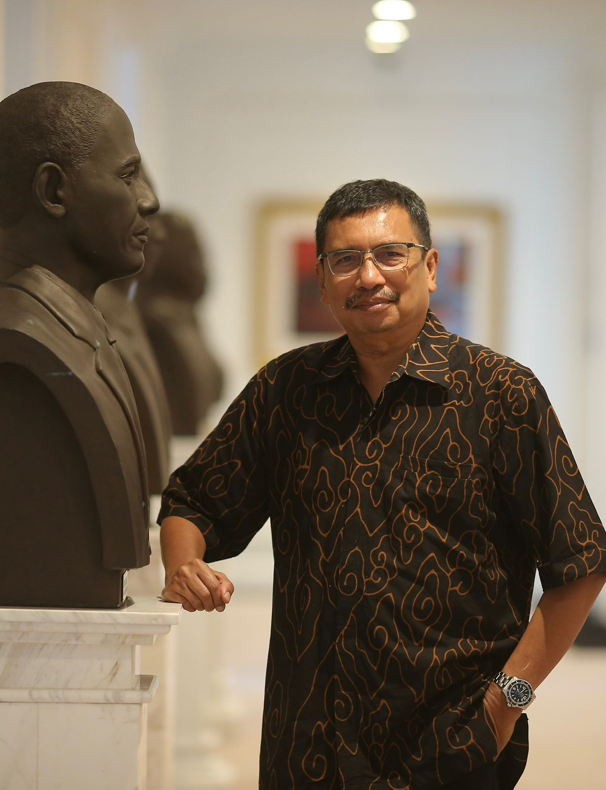
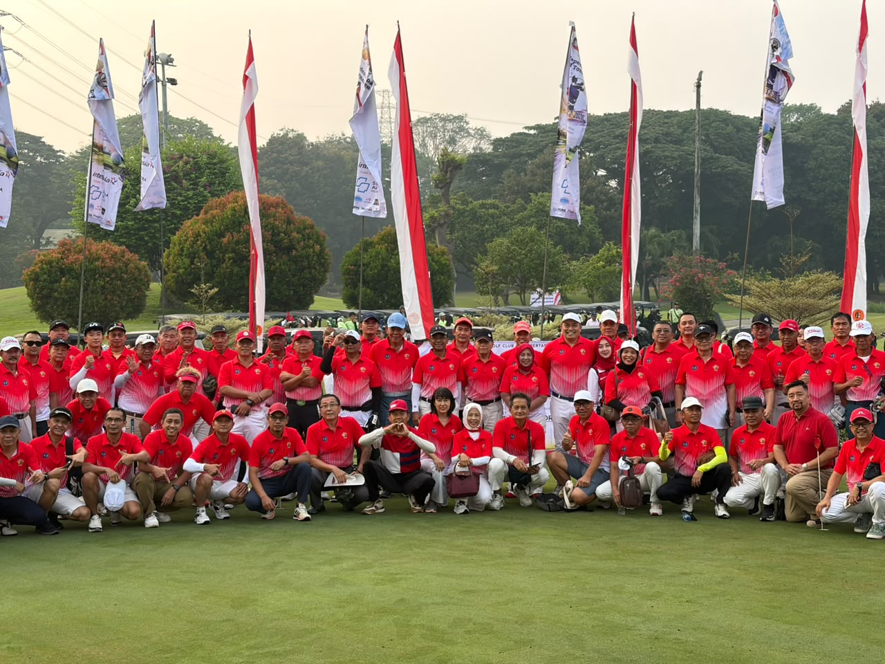


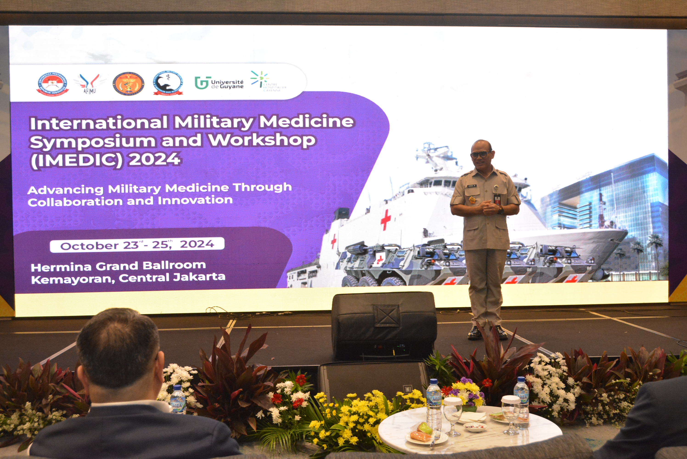
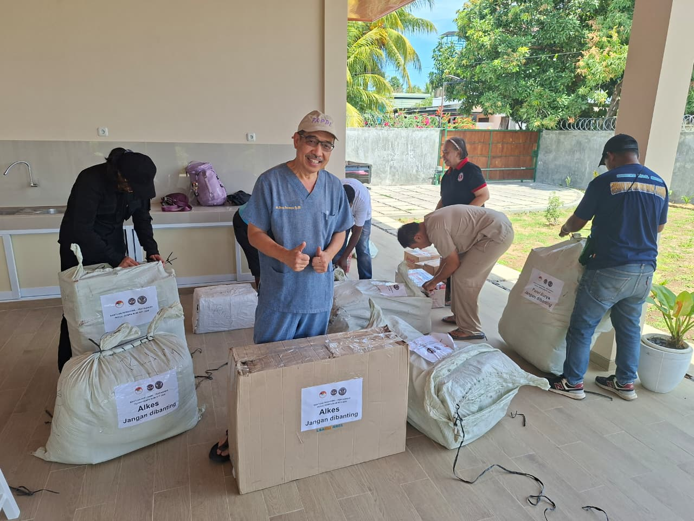
Pengemasan akhir bantuan alat kesehatan bertanda “Alkes – Jangan Dibanting” sebelum diberangkatkan ke Nusa Tenggara Timur.
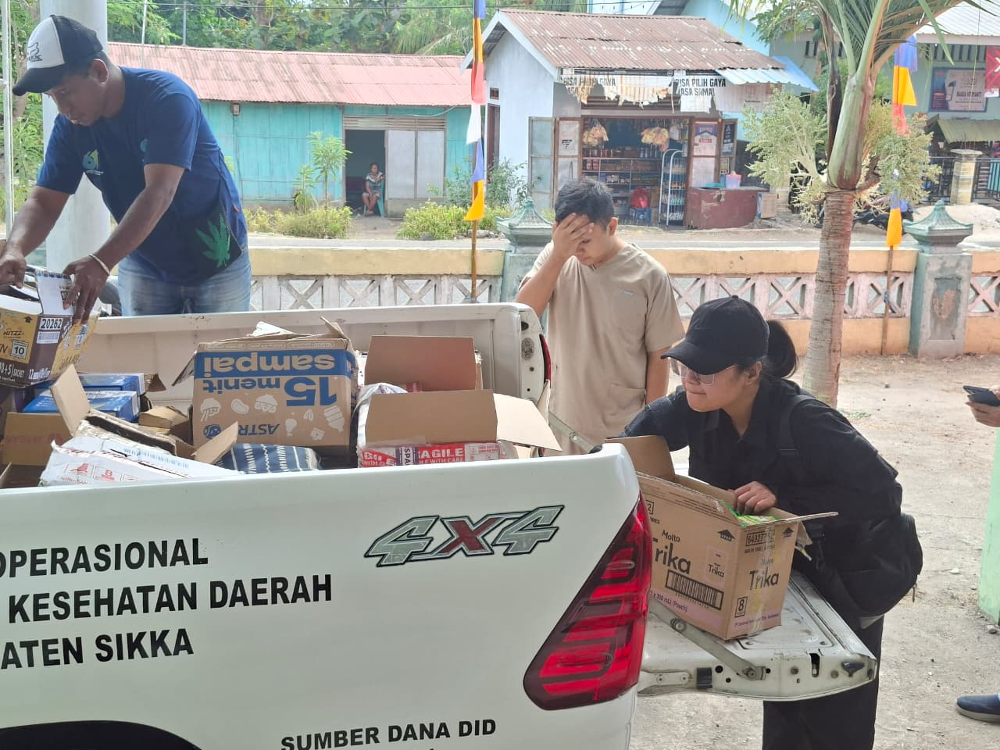
Bantuan diturunkan dari kendaraan operasional Dinas Kesehatan Daerah Kabupaten Sikka untuk diteruskan ke titik distribusi.
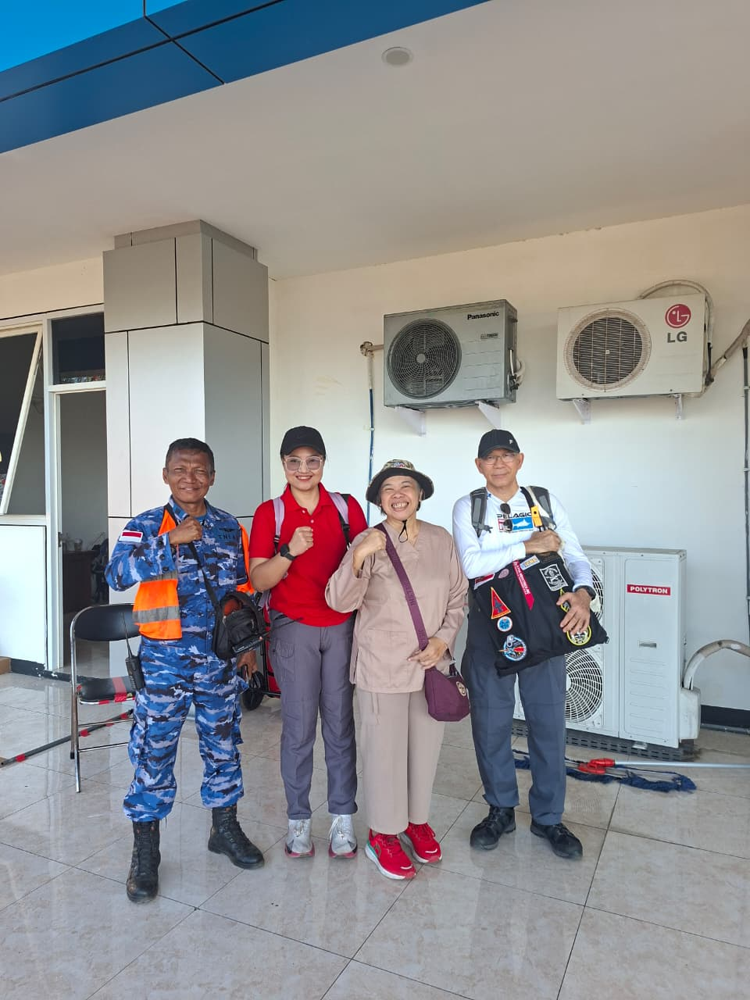
Tim PERTASINDO disambut personel TNI begitu tiba di Nusa Tenggara Timur.
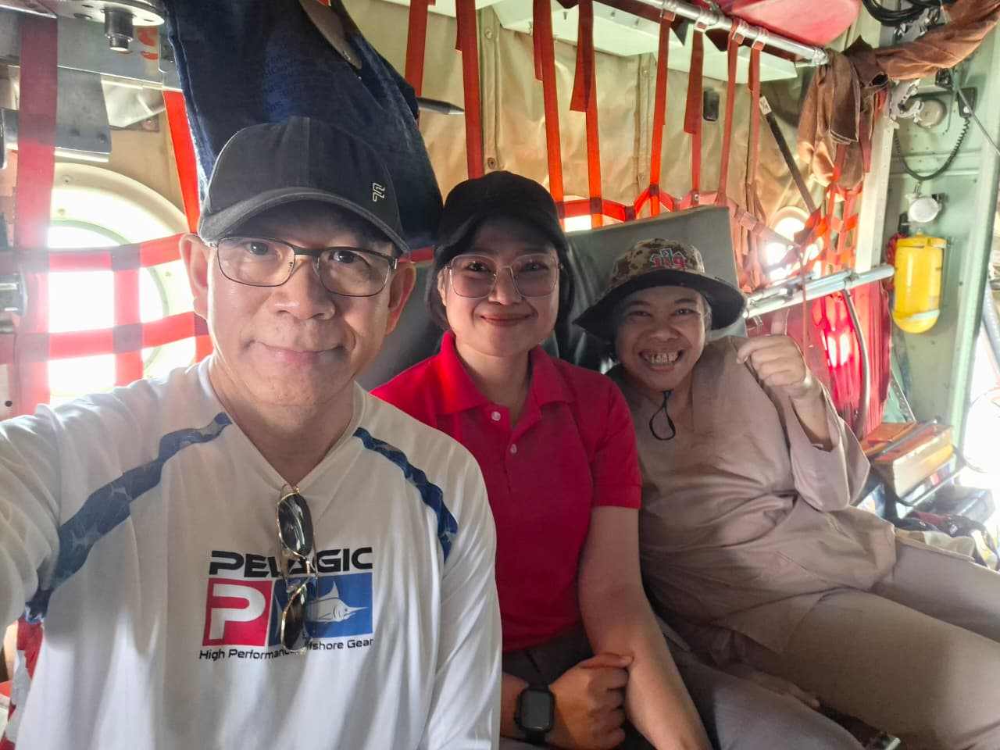
Momen kebersamaan tim relawan selama perjalanan menuju lokasi bakti sosial.
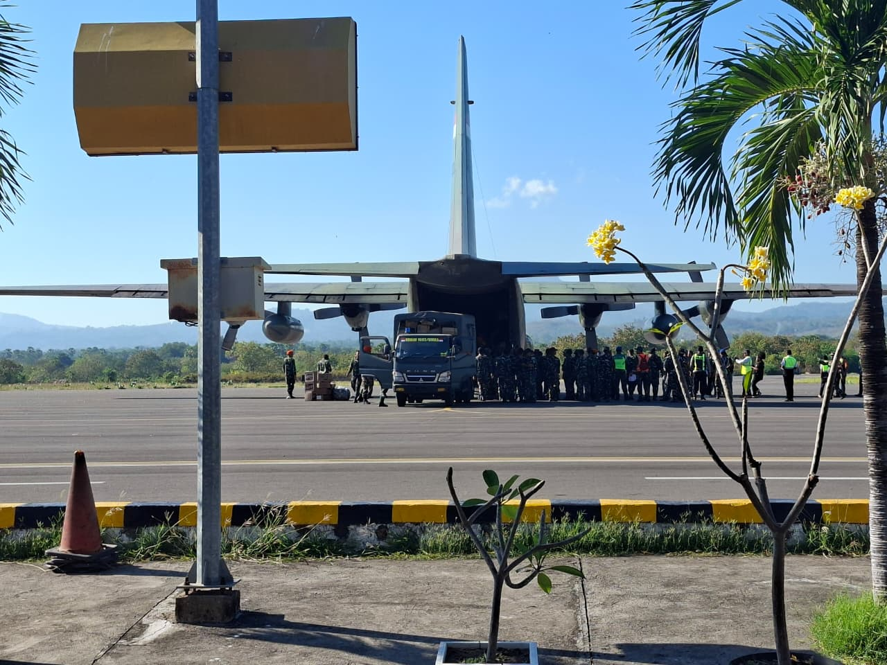
Pesawat Hercules TNI Angkatan Udara mengangkut bantuan logistik kesehatan menuju NTT.
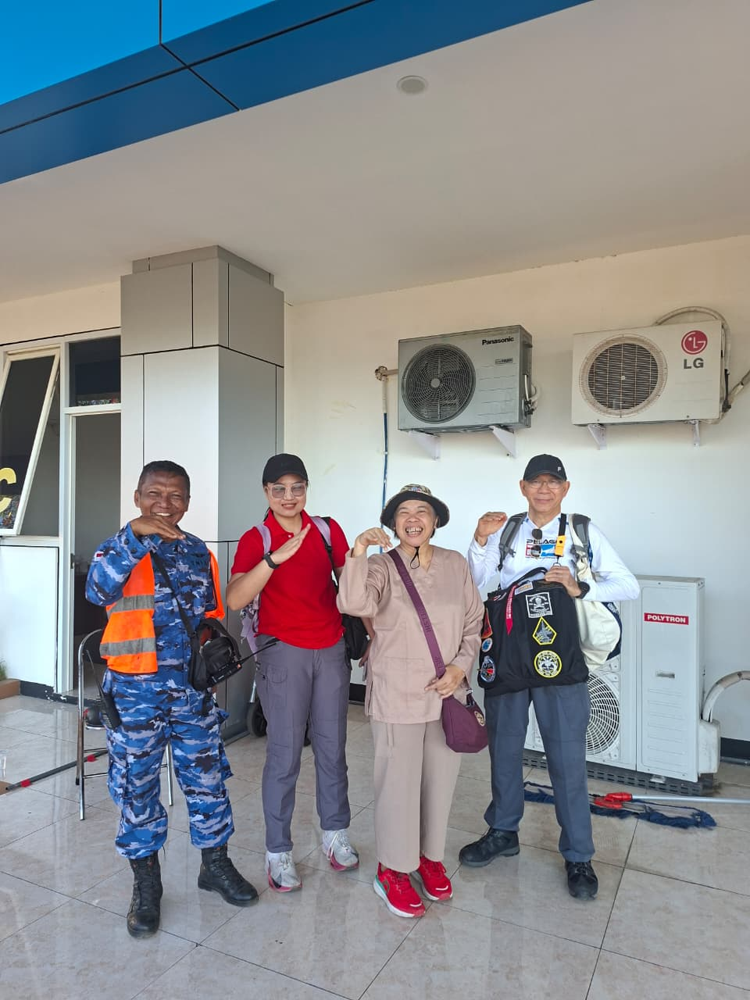
Kekompakan tim PERTASINDO dan mitra TNI di lapangan udara, siap melanjutkan misi kemanusiaan.
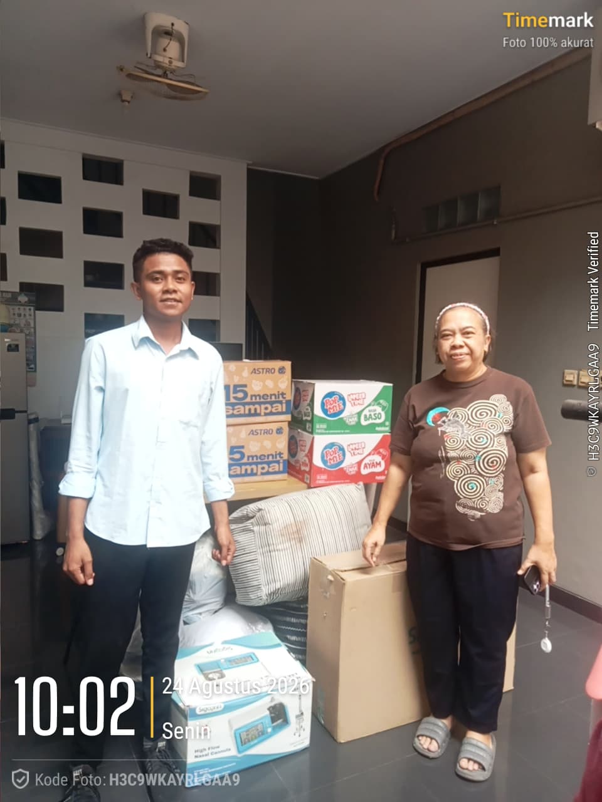
Paket bantuan berupa kebutuhan pokok dan alat kesehatan yang dikumpulkan sebelum dikirim ke NTT.
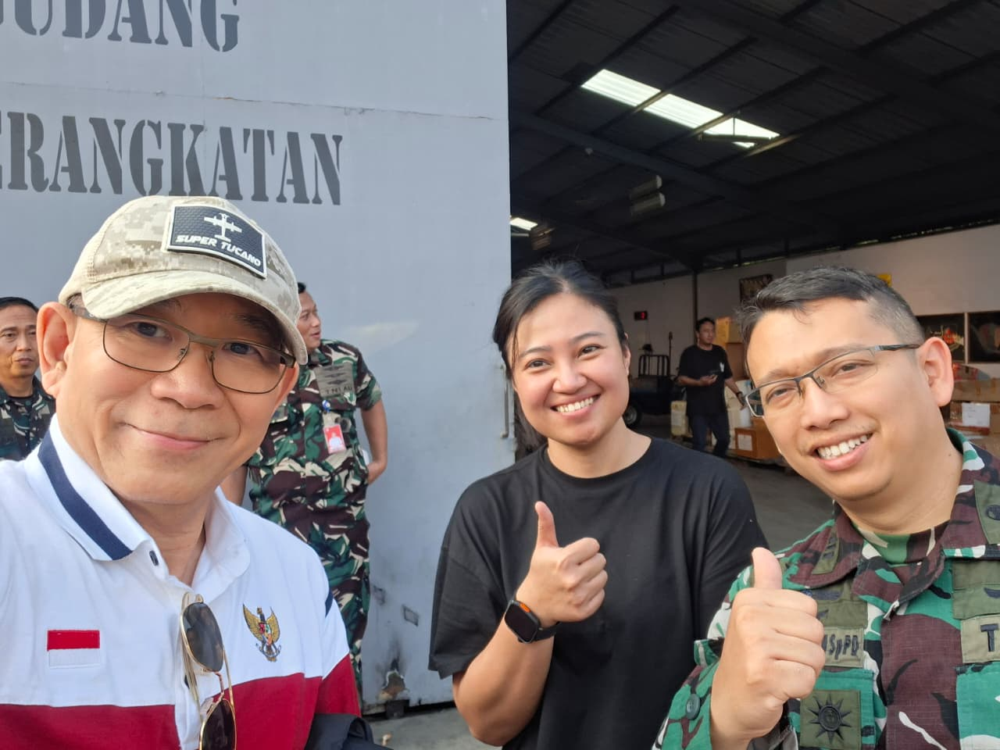
Koordinasi bersama personel TNI di Gudang Perbekalan Angkatan sebelum bantuan dinaikkan ke pesawat.
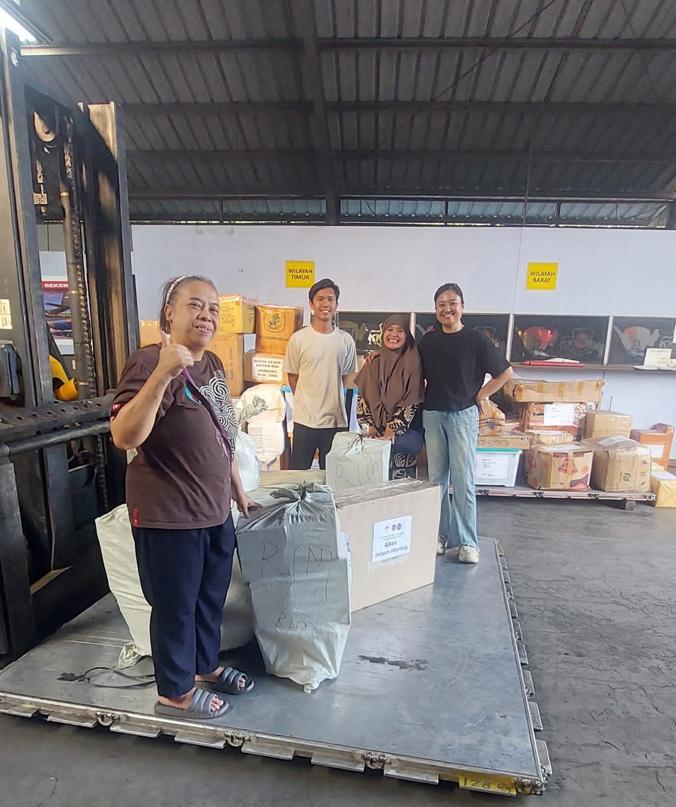
Bantuan alat kesehatan PERTASINDO dikonsolidasikan di gudang logistik, dipilah sesuai zona distribusi.
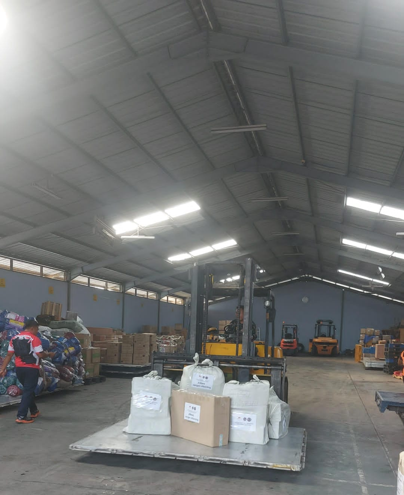
Barang bantuan yang telah dikemas siap diberangkatkan dari gudang logistik menuju Nusa Tenggara Timur.
Perkumpulan Ketahanan Kesehatan Indonesia (PERTASINDO) mengirimkan tim Emergency Response melalui Divisi Medical Emergency Preparedness and Response–Disaster (MERP-DISASTER) untuk membantu masyarakat yang terdampak gempa bumi di Kabupaten Sikka, Nusa Tenggara Timur (NTT).
Misi kemanusiaan tersebut dilakukan dengan membawa sejumlah kebutuhan medis dan logistik untuk mendukung masyarakat serta fasilitas kesehatan di wilayah terdampak. Tim berangkat dari Lanud Halim Perdanakusuma, Jakarta, menuju Maumere dengan dukungan transportasi udara dari TNI Angkatan Udara.
Atas arahan Ketua Umum PERTASINDO, Dr. Dr. dr. Dian Andriani Ratna Dewi, SpDVE, MBiomed, MARS, SH, MH, FINSDV, FAADV, persiapan dilakukan dengan mengerahkan personel sekaligus mengumpulkan obat-obatan, alat kesehatan, kebutuhan logistik, tenda, panel surya, bahan makanan dan perlengkapan lainnya.
Tiga personel diterjunkan dalam misi tersebut, yakni dr. Renauld Koswiranagara, FIMMA selaku koordinator, Dr. dr. Tri Maharani, Sp.EM, FIMMA, Toxinologist, serta Kapten Kes dr. Dwi Fitri, FIMMA.
Tim membawa delapan koli bantuan dengan berat sekitar 100 kilogram. Mereka bertolak pada 25 Agustus 2026 dan tiba di Bandara Frans Seda, Maumere, sekitar pukul 09.30 WITA.
Setelah tiba di Maumere, tim langsung melakukan koordinasi dengan jajaran kesehatan TNI AU, Dinas Kesehatan, serta tenaga kesehatan di Kabupaten Sikka. Langkah tersebut dilakukan untuk memetakan kebutuhan dan menentukan lokasi yang menjadi prioritas penanganan.
Tim kemudian mendatangi sejumlah lokasi, di antaranya Pengungsian Nangahale, Puskesmas Watubaing, Puskesmas Boganatar, Puskesmas Waigete, RSUD TC Hillers, dan RS St. Gabriel Kewapante.
Selain mendistribusikan bantuan, PERTASINDO juga memberikan perhatian terhadap persoalan kesehatan yang muncul di lokasi pengungsian. Salah satunya terkait meningkatnya potensi interaksi warga dengan ular akibat perubahan lingkungan pascagempa.
Kondisi lingkungan yang berubah, keberadaan puing bangunan, terganggunya habitat ular, serta aktivitas warga di area terbuka menjadi sejumlah faktor yang perlu diantisipasi. Di Puskesmas Watubaing, tim juga menemukan adanya pasien pengungsi yang mengalami gigitan ular.
Dokter Tri Maharani kemudian memberikan edukasi kepada masyarakat dan pelatihan bagi tenaga kesehatan mengenai upaya pencegahan serta penanganan gigitan ular berbisa.
Bantuan yang disalurkan PERTASINDO mencakup antibisa ular, obat-obatan, alat kesehatan, High Flow Nasal Cannula (HFNC), panel surya, lampu tenaga surya, tenda, bahan makanan, pakaian dan kebutuhan sehari-hari lainnya.
Salah satu dukungan peralatan kesehatan juga diberikan kepada RSUD TC Hillers berupa HFNC. Bantuan tersebut diharapkan dapat menunjang pelayanan medis bagi masyarakat yang membutuhkan penanganan kesehatan pascagempa.
Ketua Umum PERTASINDO, Dian Andriani Ratna Dewi, melalui misi tersebut menegaskan komitmen organisasi dalam memperkuat ketahanan kesehatan, terutama dalam menghadapi situasi bencana dan kondisi kedaruratan medis.
Pelaksanaan misi melibatkan kolaborasi dengan berbagai pihak, termasuk TNI Angkatan Udara, Dinas Kesehatan, rumah sakit, puskesmas, tenaga kesehatan setempat, donatur dan masyarakat.
Kolaborasi tersebut menjadi bagian penting agar bantuan yang dikirim tidak hanya tiba di wilayah terdampak, tetapi juga dapat disesuaikan dengan kebutuhan masyarakat dan fasilitas kesehatan di lapangan.
Setelah menyelesaikan rangkaian kegiatan di Kabupaten Sikka dan Maumere, Tim Emergency Response PERTASINDO kembali ke Jakarta pada 26 Agustus 2026 dalam kondisi selamat.
Respons tersebut menjadi bagian dari upaya PERTASINDO dalam menjalankan peran kemanusiaan melalui kesiapsiagaan bencana, pelayanan kedaruratan medis, peningkatan kapasitas tenaga kesehatan dan kerja sama lintas sektor.
Kebakaran hutan dan lahan (Karhutla) tidak hanya menimbulkan kerusakan lingkungan, tetapi juga berpotensi memberikan dampak luas terhadap kesehatan masyarakat.
Asap yang dihasilkan dari kebakaran dapat menyebar jauh dari titik api dan meningkatkan risiko gangguan pernapasan bagi masyarakat.
Pandangan tersebut disampaikan Brigjen TNI (Purn.) dr. Alexander K. Ginting, Sp.P(K), FIMMA, dokter spesialis dan konsultan paru sekaligus salah satu Dewan Pakar Perkumpulan Ketahanan Kesehatan Indonesia (PERTASINDO).
Menurut Alexander, penanganan Karhutla perlu ditempatkan dalam perspektif yang lebih luas. Keberhasilan memadamkan api tidak otomatis menghilangkan ancaman kesehatan karena paparan asap masih dapat berlangsung setelah kebakaran terkendali.
“Ketika api padam, ancaman terhadap kesehatan belum tentu ikut padam,” ujar Alexander.
Ia menjelaskan, asap Karhutla mengandung berbagai zat dan partikel yang dapat masuk ke sistem pernapasan. Salah satu yang perlu mendapat perhatian adalah partikulat halus PM2.5 karena ukurannya sangat kecil sehingga dapat mencapai bagian dalam saluran pernapasan.
Paparan asap dapat menyebabkan berbagai keluhan, seperti iritasi mata dan tenggorokan, batuk, berdahak, sesak napas hingga infeksi saluran pernapasan akut (ISPA).
Kondisi tersebut juga dapat memperburuk penyakit yang sebelumnya telah dialami, terutama asma dan penyakit paru obstruktif kronik (PPOK).
Selain partikulat, asap kebakaran juga dapat mengandung karbon monoksida dan sejumlah senyawa lainnya. Pada paparan tertentu, karbon monoksida dapat mengganggu kemampuan tubuh memperoleh oksigen.
Karena itu, Alexander menilai dampak Karhutla tidak cukup diukur dari luas lahan yang terbakar.
Jumlah masyarakat yang terpapar asap dan kapasitas sistem kesehatan dalam menghadapi dampak tersebut juga perlu menjadi perhatian.
Kelompok masyarakat tertentu memiliki risiko lebih tinggi ketika kualitas udara memburuk.
Mereka antara lain anak-anak, lanjut usia, ibu hamil, penderita asma, PPOK, penyakit jantung dan paru, serta masyarakat yang bekerja atau melakukan aktivitas di luar ruangan dalam waktu lama.
Alexander juga mengingatkan bahwa dampak asap tidak mengenal batas administratif.
Pergerakan angin dapat membawa asap dari lokasi kebakaran ke wilayah lain yang berjarak jauh. Kondisi tersebut membuat Karhutla menjadi persoalan yang membutuhkan penanganan lintas wilayah dan lintas sektor.
Dalam konteks Indonesia, Karhutla juga dipengaruhi oleh kombinasi faktor manusia dan kondisi lingkungan.
Aktivitas penggunaan api untuk membuka atau membersihkan lahan menjadi salah satu faktor yang dapat memicu kebakaran, sementara kemarau panjang dan kondisi lahan yang kering dapat membuat api lebih mudah meluas.
Kondisi lahan gambut menjadi perhatian khusus. Ketika gambut mengalami kekeringan, api dapat menjalar hingga lapisan bawah permukaan sehingga proses penanganannya menjadi lebih kompleks.
Pada 2026, persoalan Karhutla kembali menjadi perhatian seiring memasuki periode kemarau. Berdasarkan data yang dikutip dalam materi PERTASINDO, hingga 1 September 2026 Polri telah menetapkan 89 tersangka perorangan dari 189 laporan terkait dugaan Karhutla.
Alexander menilai masyarakat juga perlu menjadikan informasi kualitas udara sebagai salah satu pertimbangan sebelum melakukan aktivitas di luar rumah.
Air Quality Index (AQI) dapat digunakan untuk mengetahui kondisi udara dan menentukan langkah perlindungan yang diperlukan.
Ketika kualitas udara memburuk, masyarakat disarankan mengurangi aktivitas di luar ruangan, terutama aktivitas fisik berat. Jika harus keluar rumah, penggunaan masker yang sesuai dapat membantu mengurangi paparan partikulat.
Paparan asap di dalam rumah juga dapat ditekan dengan menutup pintu dan jendela serta mengurangi celah masuknya udara dari luar. Penggunaan air purifier dengan filter HEPA juga dapat membantu menyaring partikulat halus di dalam ruangan.
Masyarakat perlu segera mencari pertolongan medis apabila mengalami sesak napas, batuk yang semakin berat, mengi, nyeri dada atau gangguan pernapasan yang tidak kunjung membaik.
Sebagai Dewan Pakar PERTASINDO, Alexander melihat penanganan Karhutla dari sisi kesiapan kesehatan, khususnya perlindungan respirasi dan ketahanan sistem pelayanan kesehatan.
Kesiapsiagaan tersebut mencakup pemetaan kelompok rentan, edukasi masyarakat, pemantauan gangguan pernapasan, surveilans kesehatan, hingga kesiapan fasilitas pelayanan kesehatan.
Menurutnya, peningkatan paparan asap dalam skala luas berpotensi meningkatkan jumlah masyarakat yang membutuhkan pelayanan medis secara bersamaan.
Situasi tersebut dapat memberikan tekanan terhadap puskesmas, rumah sakit, tenaga kesehatan, obat-obatan, hingga sistem rujukan. Karena itu, penanganan Karhutla membutuhkan kerja sama berbagai unsur.
Upaya tersebut tidak hanya berkaitan dengan pemadaman api, tetapi juga pencegahan, pemantauan kualitas udara, perlindungan masyarakat, pelayanan kesehatan dan pemulihan pascabencana.
PERTASINDO menilai Karhutla menjadi contoh bahwa ancaman terhadap ketahanan kesehatan nasional tidak selalu berupa wabah penyakit.
Kerusakan lingkungan dapat berkembang menjadi kedaruratan kesehatan ketika paparan asap menjangkau masyarakat dalam jumlah besar.
Alexander mengingatkan masyarakat agar tidak menunggu munculnya gangguan pernapasan untuk mulai memperhatikan kualitas udara.
Menurutnya, mengenali kondisi udara, melindungi kelompok rentan, mengurangi paparan asap dan segera mencari pertolongan ketika muncul gejala merupakan bagian dari kesiapsiagaan menghadapi Karhutla.
Bergabunglah sebagai anggota dan ikuti setiap perkembangan kami.